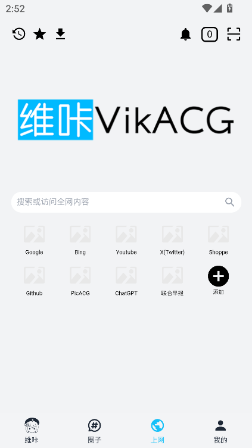

用了半年才发现 V站藏着四个别人不说的彩蛋
你以为它只是看漫画追新番的工具？我把 VikACGapp 翻了个底朝天，挖出几个官方不宣传、但日常用得上的冷门功能。
你以为 VikACGapp 就是个看漫画追新番的二次元 App？
我一开始也这么想。应用商店把它归在「小说漫画」分类，图标又是 ACG 风格的二次元角色，第一次点开它确实是冲着色号和漫画榜单来的。但用了大半年，闲下来翻各个菜单翻到设置里的子菜单，才发现这玩意儿根本不是一个单纯的漫画阅读器——它的官网上介绍得很清楚自己是泛次元综合社区，藏着好几个官方不怎么宣传、但日常真能用得上的彩蛋。
今天把这几个我私藏的功能一次性挖出来，说不定哪一个你刚好需要。

隐藏功能一：它其实是个次元上网入口
这个藏得真深。第一次打开内置浏览器入口的时候我愣了一下——我装的是个漫画 App 对吧？为什么里面有一个功能完整的浏览器？
入口倒不难找：首页搜索框旁边或者侧边栏有个浏览器图标，点进去就是一个带地址栏、标签页、收藏功能的完整浏览器壳。它不是那种嵌个 WebView 的花架子，是真的能打开任意网页、处理跳转、自动调用下载管理器的那种。
这东西有什么用？举三个日常场景：
刷到 Galgame 资源帖，里面有下载链接——别的 App 要跳出去用系统浏览器打开，再切换回来，中间还可能丢了帖子上下文。V 站里直接点，浏览器帮你处理跳转，下载自动进下载管理器，全程不出 App。
想搜某个作品的攻略或者评测——直接在 V 站首页搜索框搜，结果不会跳出 App，内置浏览器接管了所有搜索结果页面。
在外逛动漫资讯站、看到好文章想收藏——内置浏览器顶部工具栏有个星星图标，一点就存进 V 站收藏夹，和站内的帖子、文章放在一起统一管理。
说白了，这个浏览器壳让 V 站从「一个 App」变成了「一个次元上网入口」——你不需要在浏览器和漫画 App 之间反复横跳了。
什么人用得上？经常在 V 站找资源的老司机、平时逛动漫资讯站的、想把二次元相关的浏览活动集中在一个 App 里的。如果你只是单纯看漫画，那这个功能可以无视。
隐藏功能二：积分不是攒着换会员那么简单
V 站有积分体系这个大家可能都知道——签到、发帖、评论都能赚积分，积分可以兑换黄金会员。但我翻完积分规则表才发现，大多数人都在用最笨的方式赚积分。
先说最基础的：每日签到给 500~2000 随机积分，新人首次注册额外 400，连续签到 7 天还有额外奖励。这些大家都在做，但签到只是效率最低的那条线。
真正的高效路线是这样的：每天签到 + 每天发 1 个圈子贴或者点子——圈子贴 50 分、点子 50 分，一个月下来签到 24000 + 互动 1500，比纯签到多赚 1500 分。如果每周还能写 1 篇专栏文章，那一篇就是 1000 分，一个月 4 篇就是额外 4000 分。
但这里有个真正的隐藏点：积分可以用来兑换的不止黄金会员。官方没在首页大张旗鼓宣传，但积分管理页里其实有好几个兑换选项——虚拟礼物可以送给喜欢的创作者，下载加速券在下载大文件时能省不少时间，去广告权限也是单独兑换项。甚至有的版本还能兑换 V 站周边或者定制礼物。
我之前一直攒着积分等会员，偶然翻积分管理页才发现加速券这个东西——从官方下载的 Galgame 安装包用它加速的时候真的能感觉到速度差异。
提醒一个坑：积分会不会过期不同版本规则不一样，有的永久有效有的 1 年不用就过期。别攒着积分等升值，早用早爽。另外积分一般不支持转让，想给朋友换会员得走邀请好友体系。

隐藏功能三：收藏夹其实是三合一的书签体系
说到收藏夹，很多人以为就是收藏站内的帖子和文章。我之前也这么用，直到有一天在内置浏览器里看了一篇觉得有用的外部网页，顺手点了顶部的星星图标——结果那篇网页链接出现在了 V 站收藏夹里，和我收藏的圈子帖子、专栏文章躺在一起。
原来 V 站收藏夹是三合一的：站内内容（圈子贴、专栏、资源帖）、内置浏览器收藏的外部网页、漫画阅读器里收藏的作品，三类内容统一进同一个收藏夹管理。
入口在「我的」页面第一排快捷图标的星星按钮，进去之后可以按类型筛选——只看帖子、只看文章、只看网页、只看漫画。不同版本可能合并显示也可能分 Tab，但三合一这个逻辑是统一的。
这东西有什么用？举个例子：我在 V 站圈子里看到一个 Galgame 资源帖，在内置浏览器里搜到了这款游戏的评测文章，又在漫画阅读器里收藏了同名原作漫画——这三个收藏原本散在不同地方，但在 V 站收藏夹里，我可以把它们标记为同一个主题的相关内容。有的版本还支持自己建文件夹或标签来分类收藏，这个一定要用上，收藏多了之后全堆在一个列表里找东西会发疯。
收藏和历史记录不一样——历史记录是被动记录浏览痕迹，可能会自动清理，而收藏是主动保存的、永久的（除非手动删）。但这里也有个坑：收藏夹的同步功能依赖账号登录，换设备或者重装 App 的时候如果没登录同一个账号，收藏可能就丢了。重要的收藏建议顺便转发到自己的动态或者微信，双重备份。
隐藏功能四：写专栏才是积分性价比最高的事
最后说一个创作者专属但没人提的细节：V 站的创作者中心，发布一篇专栏文章直接给 1000 积分——比签到 7 天的固定奖励还多。
我是偶然在积分规则表里看到这一条的，当时还不太相信，自己试着写了一篇发出去，积分到账的时候真的加了 1000。圈子贴才 50 分，点子 50 分，专栏直接 1000，这性价比差了 20 倍。
当然门槛也高一些——不是所有人都能开创作者中心，但开通并不难。后来去翻VikACGapp文档才知道有一套完整的创作者成长路线：先找好定位（不要上来就想全品类，先选你最熟悉的领域），保持更新频率（每周 1 篇起步就行），在圈子里推广（发点子预告、参与讨论帖带链接），和其他创作者互动。
但真正让我觉得惊喜的不是积分，而是创作者中心有数据看板——能看到每篇文章的阅读量、点赞、评论、收藏，还能根据数据调整写作方向。比如你写 Galgame 评测数据特别好，那就多写这类；某篇文章收藏多，说明内容实用可以写系列。
给想试试的朋友一个参考目标：第一个月发 4 篇专栏，稳定下来之后一个月就是 4000 分的额外收入，加上签到和轻度互动，积分基本用不完。
一个需要注意的坑
最后说一个我踩过的坑：内置浏览器的下载功能虽然方便，但偶尔会出现下载中断的情况，重连之后不会自动续传。我一开始以为是网络问题，后来才发现这是某些版本的已知问题。建议下载大文件的时候盯着点，如果中途断了赶紧手动点重新下载，别让它在后台悄悄挂着。
另外积分兑换的黄金会员有效期是按兑换日算的，不是自然月——如果下个月有大型活动会有新的兑换活动，不妨等一等再换。
收尾
VikACGapp 不是那种把所有功能都写在应用商店介绍页的产品，很多好用的东西藏得比较深。今天挖的这四个只是我自己用了半年才发现的，说不定你再翻还能翻出别的。
二次元相关的工具这么多，但像 V 站这样把浏览器、资源、社区、创作整合在一个壳子里的不多。把它用透，说不定比你同时装好几个 App 还顺手。这篇文章里提到的所有功能细节和下载说明，都可以在我的GitHub仓库里找到完整文档，国内访问不太稳定的时候可以换用Gitee或GitCode的镜像。